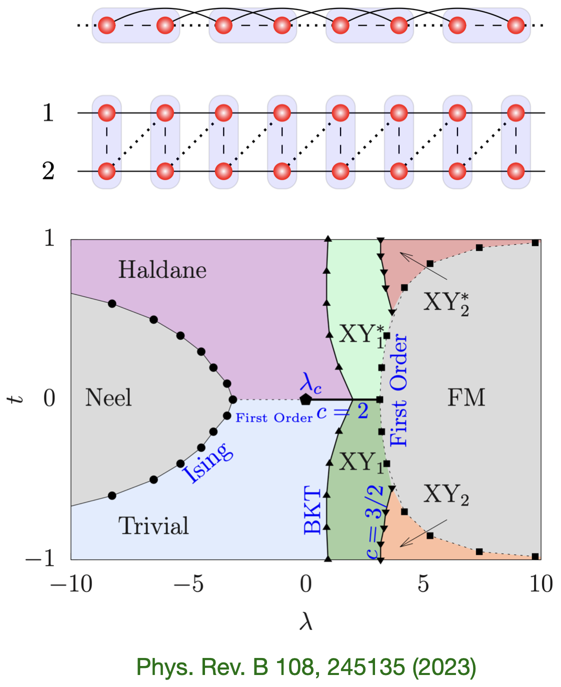
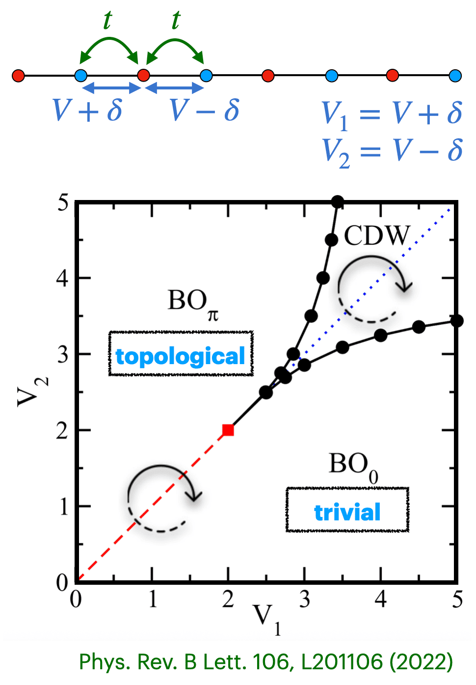
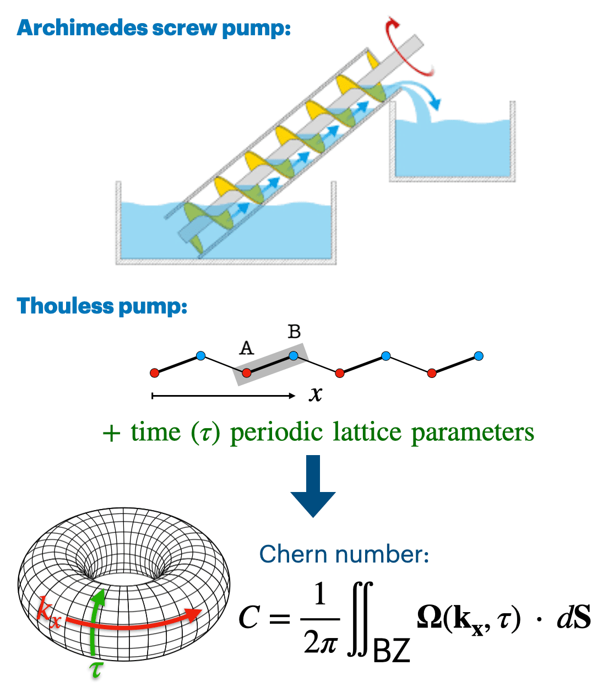
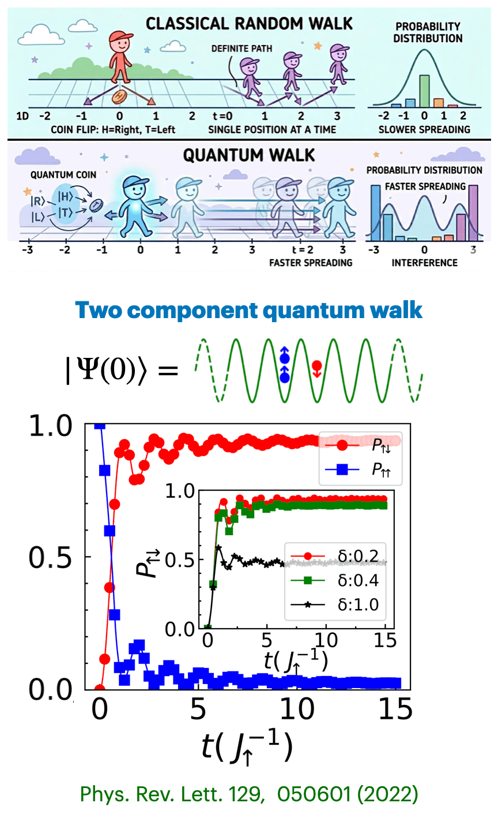
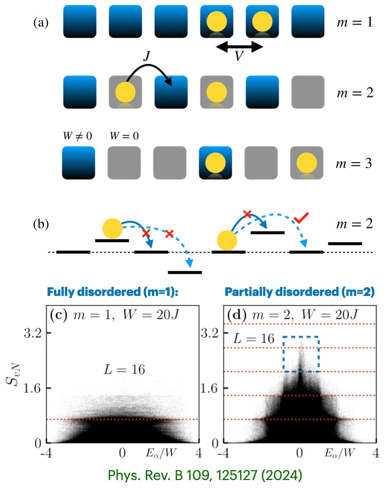
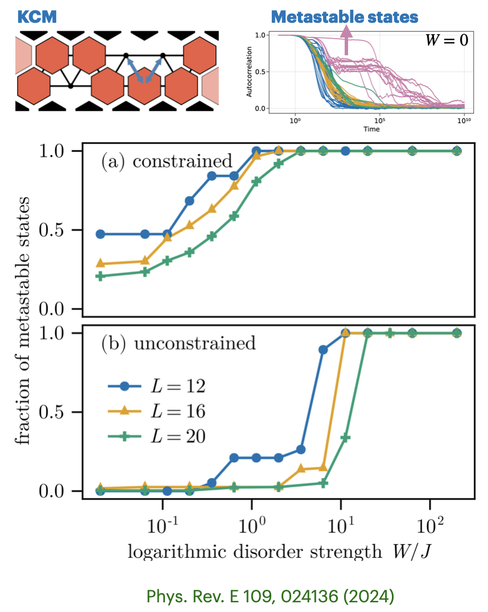
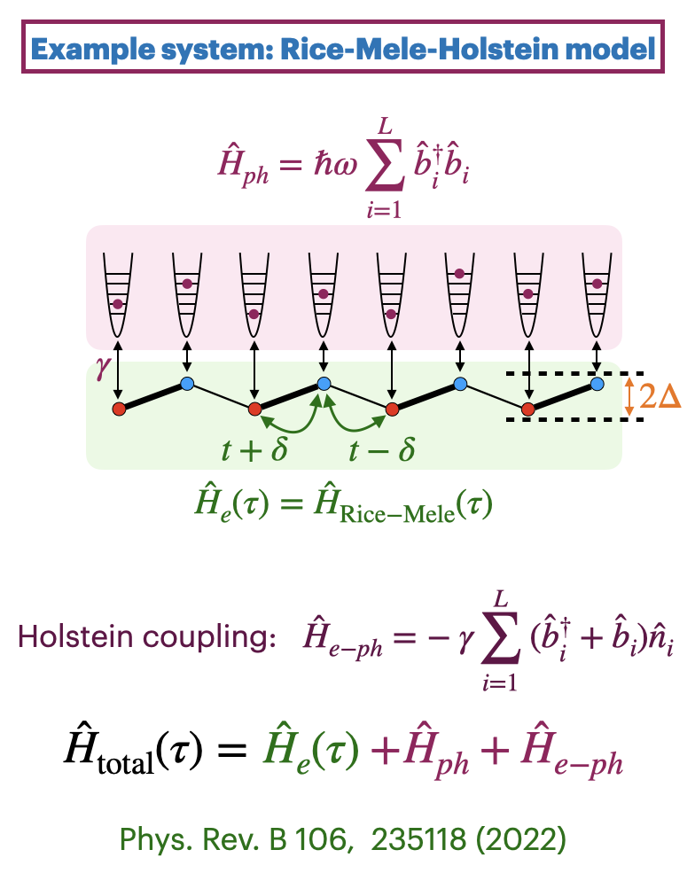
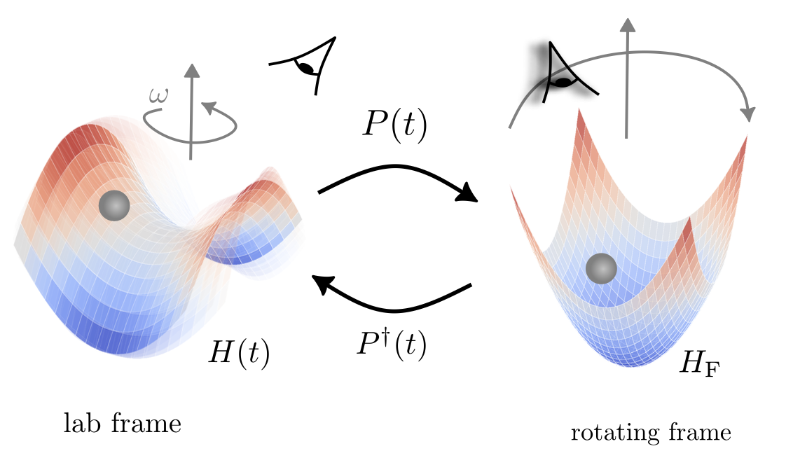
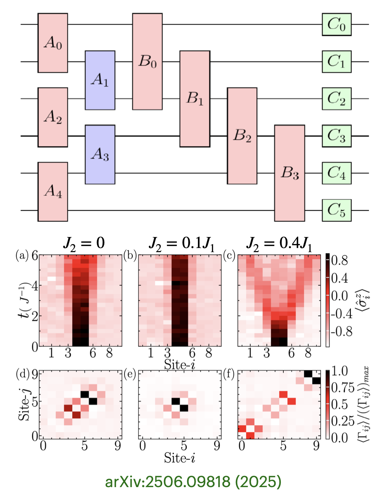

Our research focuses on the theoretical and numerical study of quantum many-body systems. The broad themes include equilibrium quantum phases and their transitions, topological phenomena, non-equilibrium dynamics, and the development of advanced numerical methods. Below is an overview of the main topics we work on.
Click on a topic to jump to that section.

A central theme of our research is understanding the rich variety of quantum phases that emerge in strongly correlated systems, ranging from Mott insulators and superfluid phases to symmetry-enriched critical points. we study one- and two-dimensional lattice models of quantum particles (such as Bose-Hubbard, extended Bose-Hubbard, spin-ladder models, etc.) to map out their phase diagrams and characterise the nature of quantum phase transitions between them.
Some of the interesting phases that we studied include: pair superfluid of photons, nearest neighbour bound states, repulsively boud pairs, dimerized insulators, charge density waves, Mott insulators, and superfluids.
Relevant publications:

Topological phases of matter are among the most fascinating discoveries of modern condensed matter physics. Unlike conventional phases, they are characterised by global topological invariants rather than local order parameters, and host robust edge states protected by symmetry. Our research explores how interactions modify or induce these topological phases in one-dimensional systems.
We have studied interaction-driven realisation of symmetry-protected topological (SPT) phases through dimerized interactions, topological inheritance in two-component Hubbard model, and topological phases of interacting bosons on an SSH ladder. These works establish how interactions can both stabilise and destroy topological order, and how they generate new SPT phases beyond the non-interacting picture. Interestingly, in a coupled spin-ladder model, we found a gapless SPT phase.
Relevant publications:

Thouless charge pumping is a paradigmatic example of a topological phenomenon in periodically driven systems, where an integer number of charges are transported adiabatically per cycle, protected by a topological invariant (the Chern number). Understanding how interactions, disorder and environment affect this quantised transport is a key question.
We have investigated the breakdown of Thouless pumping due to coupling to phonons (Rice-Mele-Holstein model) and due to interactions in quasiperiodic lattices. We have also studied Thouless pumping of bound bosonic pairs and the interplay of topological pumping with ladder geometry. These studies reveal how interactions, on one hand, limit the robustness of quantised transport and on the other hand, induces quantised pumping.
Some relevant publications:

The dynamics of a small number of particles in a lattice can reveal non-trivial effects.
For example, our work has shown that bound pairs formed by repulsive interactions exhibit anomalously slow dynamics in non-locally coupled quantum circuits. We have also investigated two-component quantum walks with hopping imbalance which lead to non-trivial pairing effects in the two-component Bose-Hubbard model. This work demonstrates how inter-species interactions generate qualitatively new dynamical behaviour. We have also investigated the dynamics of Mott insulator defects in the presence of three-body interactions.
Relevant publications:

Many-body localization (MBL) is a remarkable phenomenon in which disorder prevents thermalisation in an isolated interacting quantum system, causing it to retain memory of its initial state indefinitely. Understanding the the conditions under which it occurs, or breaks down, is a central open problem in non-equilibrium physics.
We investigated partially disordered interacting many-body systems, identifying volume-law eigenstates embedded within a manifold of area-law states, a phenomenon resembling inverse quantum many-body scars. We demonstrate that these states facilitate anomalous transport behavior. Furthermore, we explored the MBL in phonon coupled systems and kinetically constrained systems.
Relevant publications:

Kinetically constrained models (KCMs) are systems in which local kinetic rules restrict the allowed transitions between states, mimicking the slow dynamics and glassy behaviour observed in many classical and quantum systems. These constraints can fundamentally alter transport, thermalisation, and localisation properties.
We have studied enhanced many-body localization in a kinetically constrained quantum model, demonstrating that kinetic constraints can significantly stabilise the MBL phase and shift the localisation transition. This work connects the study of MBL with the broader field of constrained quantum dynamics, including quantum scars.
Relevant publications:

The coupling between electrons (or bosons) and phonons introduces an additional non-equilibrium channel through which energy can be absorbed or dissipated, often leading to various quantum phenomena. Studying such systems numerically is particularly challenging due to the large phonon Hilbert space.
Recently, we developed a hybrid quantum-classical matrix-product state and Lanczos approach to treat electron-phonon systems with strong electronic correlations. We also examined phonon-induced breakdown of Thouless pumping in the Rice-Mele-Holstein model, revealing how electron-phonon coupling effects the quantised transport.
Relevant publications:

Periodically driven (Floquet) systems offer a powerful route to engineer non-equilibrium phases of matter that have no equilibrium counterpart such as Floquet topological phases, time crystals, and dynamically stabilised order.
We are currently developing a variational algorithm to find Floquet eigenstates using tensor networks, which will enable the study of strongly correlated Floquet systems beyond exact diagonalization limits.

Quantum circuits built from superconducting qubits or similar platforms are not only devices for quantum computation, but also powerful quantum simulators for strongly correlated many-body dynamics. Understanding how particles propagate and interact within such circuits isessential for both benchmarking quantum hardware and for discovering genuinely new physics.
We have studied the dynamics of bound states in a next-nearest neighbour coupled quantum circuit. Bound states arise when interactions prevent two particles from separating, causing them to propagate together as a composite object. We find that next nearest neighbour coupling in the quantum circuit geometry leads to an anomalous slow-down of these bound state dynamics, a striking departure from the conventional picture.
Relevant publications: